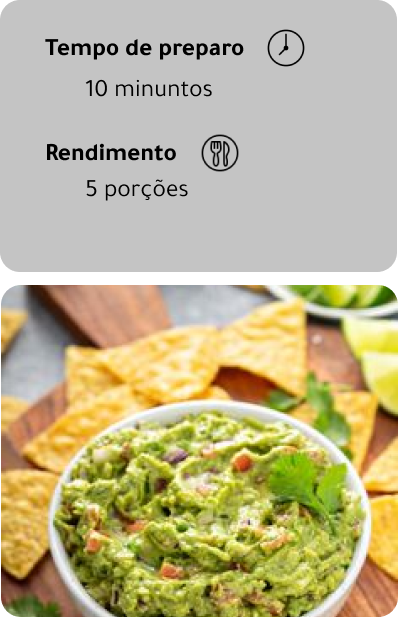

Ingredientes
- 1 abacate grande
- 1 tomate grande cortado em cubos pequenos e sem sementes
- Suco de 1 limão
- Folhas picadas de um galho de hortelã
- Azeite à gosto
- 1 cebola roxa picada em cubos pequenos
- Pimenta do reino à gosto
Modo de preparo
- Amasse o abacate com um garfo;
- Adicione a cebola, o tomate, o hortelã e o suco de limão;
- Misture;
- Agora, ponha o azeite, o sal e a pimenta do reino. Sempre experimentando para ver se está bom;
- Prontinho. Sirva com nachos, tacos ou pão tostado.
